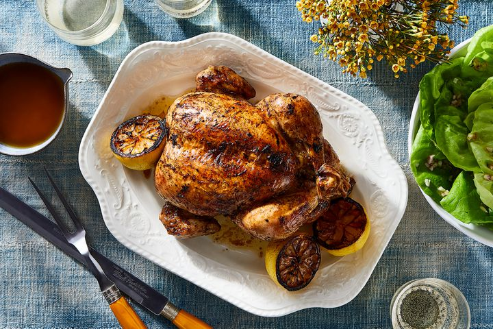

Chicken Details
Chicken is one of the most widely consumed meats worldwide. It is a rich source of protein and can be prepared in countless ways, making it a versatile ingredient in many cuisines. Common methods of cooking chicken include grilling, roasting, frying, baking, and boiling. It can be served in various dishes such as chicken curry, chicken salad, chicken stir-fry, chicken soup, and many more.
